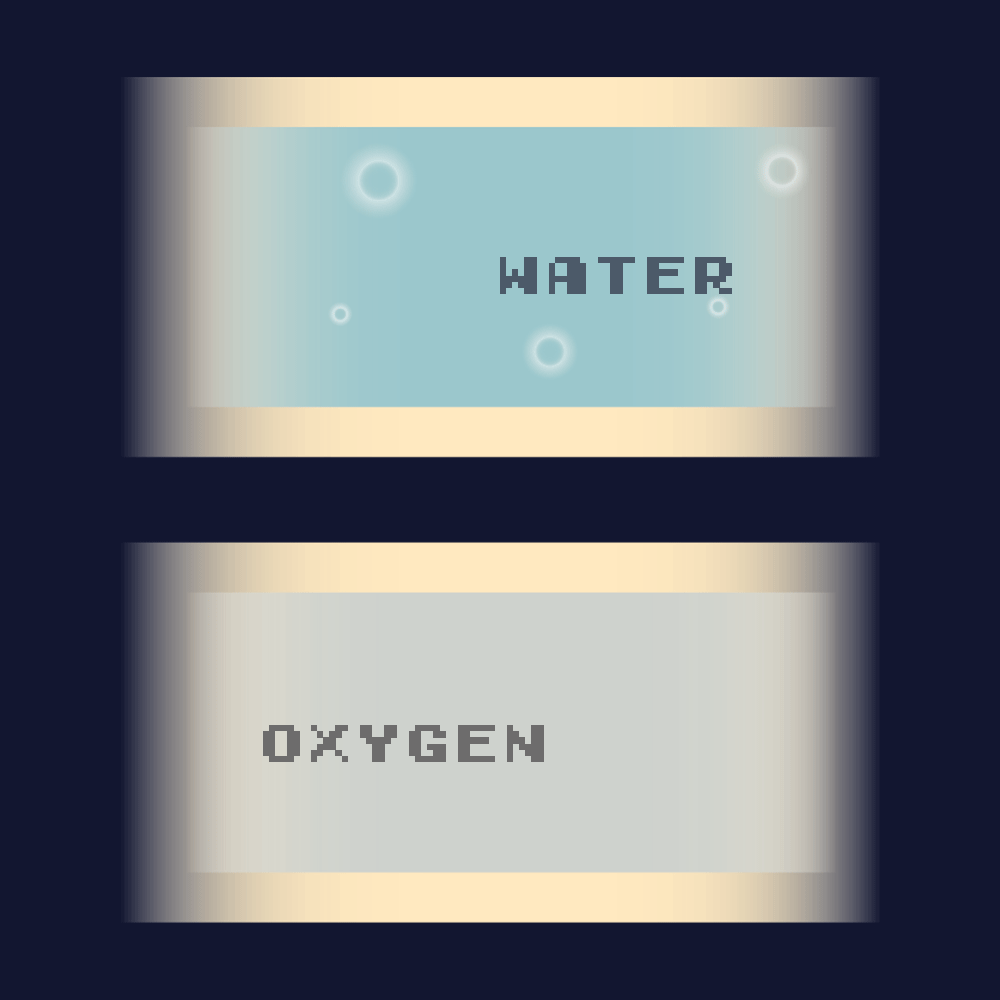

On my chest is this module that lets me operate the suit. From here, I can cool myself, talk to my team, and control other features of the suit. The torso piece connects all the tubes that flow throughout the suit that gives me oxygen and water.
Fun fact: The labels are written in reverse because I use a mirror on my wrist to see things behind and on me. The helmet makes it hard to look around. (Space.Com)
 Other Parts of a Space Suit
Other Parts of a Space Suit